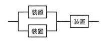
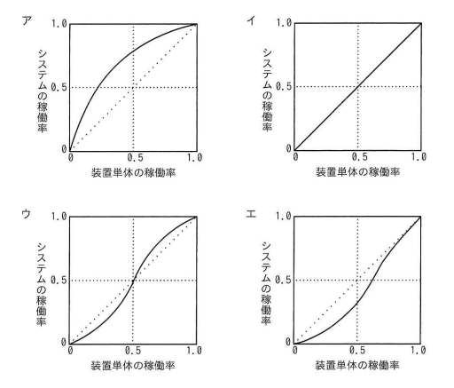

図のように3個の装置を並列と直列に組み合わせて構成したシステムがある。装置単体の稼働率と，システムの稼働率の関係を示したグラフはどれか。ここで，3個の装置の稼働率は，全て等しいものとする。
（構成：2台の装置を並列接続し、その並列部分にさらに1台の装置を直列接続）


エ：対角線（y＝x）より下を通り，装置単体の稼働率が0.5付近で対角線との差が最も大きくなる凹型のカーブ
| 選択肢 | 内容 | 補足 |
|---|---|---|
| ア | 原点から急に立ち上がり，対角線より上を通る凹型カーブ | 並列＋直列構成の場合、システム稼働率は装置単体の稼働率より低くなる区間があるため、常に対角線より上に位置するこのグラフとは一致しない |
| イ | 対角線そのもの（直線） | システム稼働率＝装置単体の稼働率となるのは単一装置構成の場合であり、並列・直列を組み合わせた本構成には当てはまらない |
| ウ | 対角線をまたいでS字に交差するカーブ | 実際の計算結果では装置単体の稼働率が0と1の端点以外は常に対角線より下に位置し、対角線をまたぐ交差は発生しないため不一致 |
| エ | 対角線より下を通り，0.5付近で差が最大になる凹型カーブ | 正解。計算結果は装置単体の稼働率0と1で一致し、それ以外（特に0.5付近）では常にシステム稼働率が下回るカーブとなり、実際の計算値と一致する |